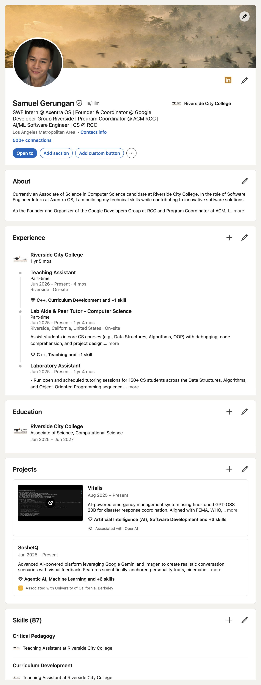
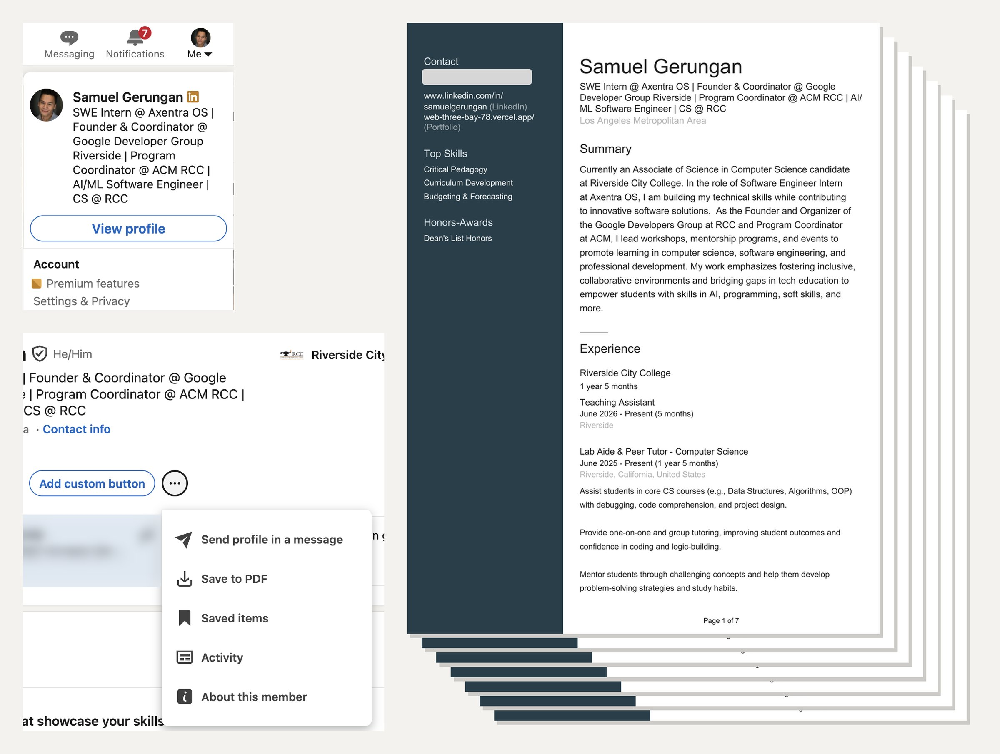
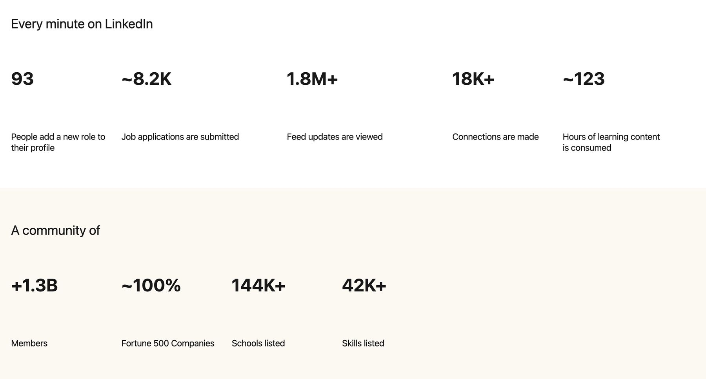
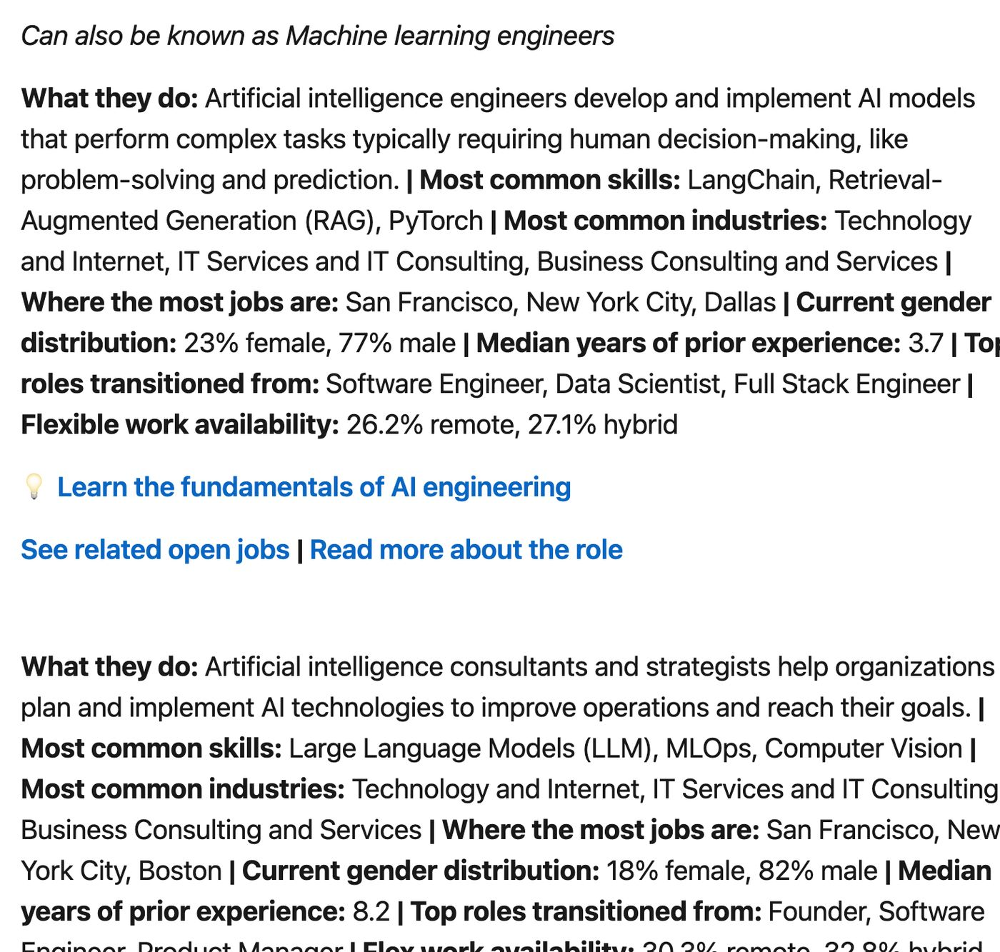
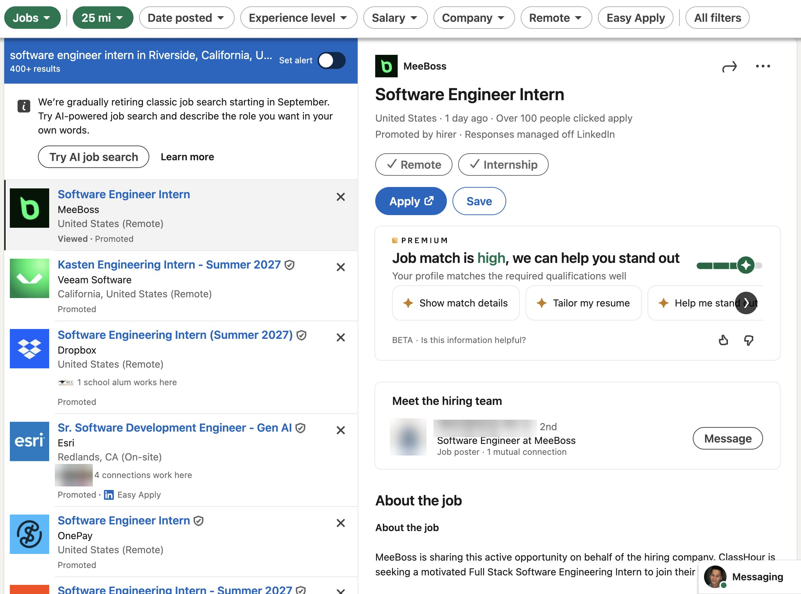
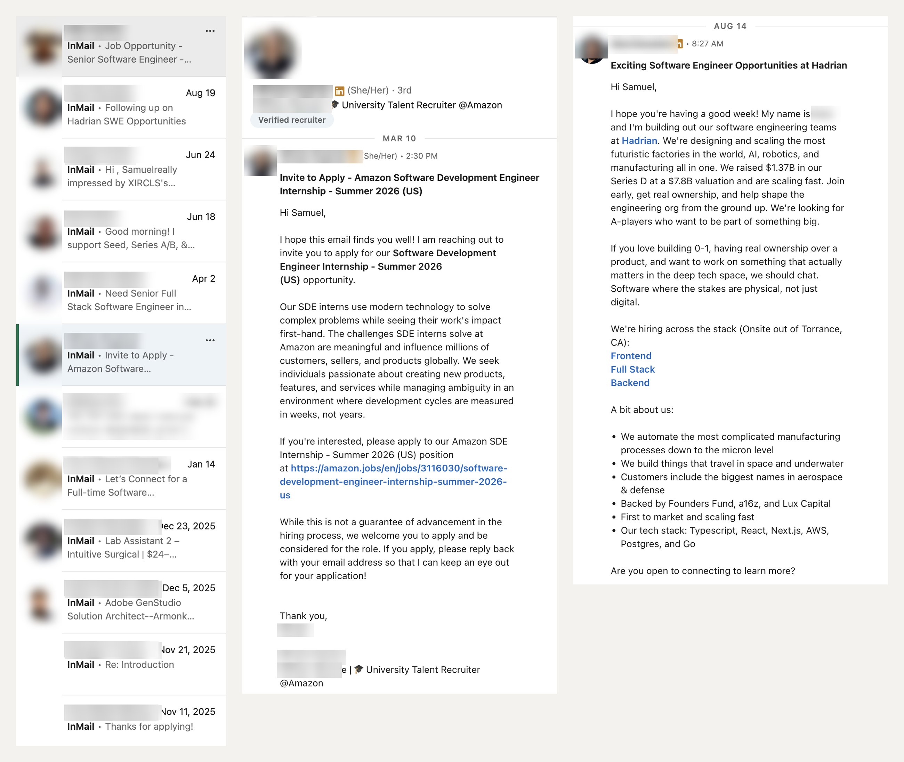
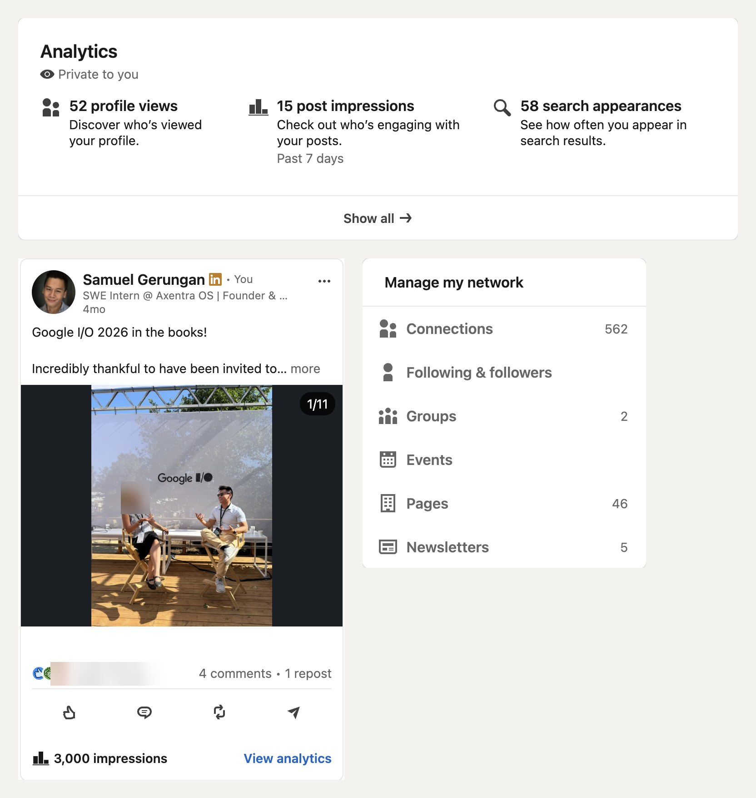
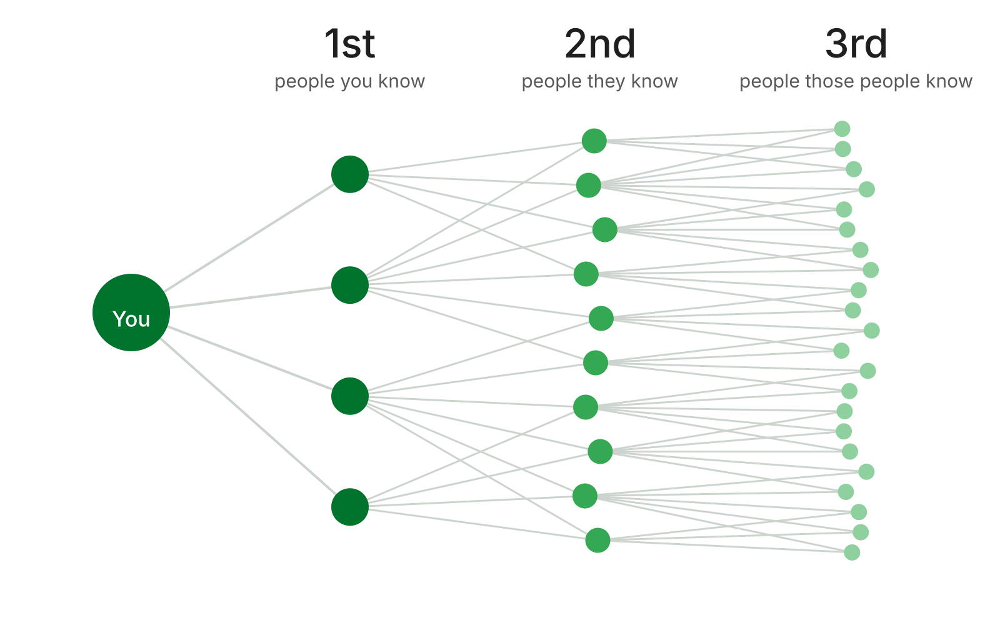
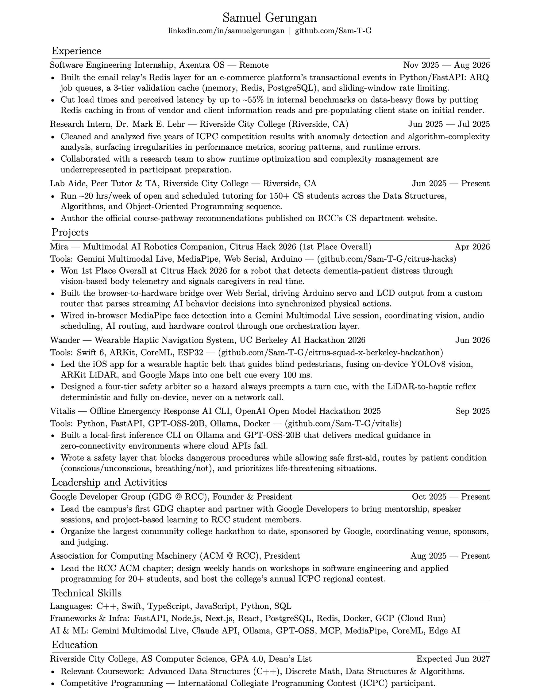

This week · LinkedIn, resumes, and a quick build
Set it up once.
LinkedIn, then your resume, then a ten-minute app you show to someone.
The chapter on BevyGDG on Campus Riverside City College is an independent group; our activities and the opinions expressed here should in no way be linked to Google, the corporation.
Today
Four things, one hour
- LinkedIn.Set it up once, then add to it slowly.
- Your resume.Print your profile, then cut it to one page.
- Build an app.Ten minutes in Google AI Studio.
- Show someone.That part is the networking.
Most people open LinkedIn the night before the career fair.
The scramble
Write everything at once, under pressure, and forget half of what you’ve done.
Set it up once
Build it tonight. Then add one line whenever something happens: a class project, a club role, a hackathon.
Why bother
Everything worth pitching about you, in one place.
Every interview answer and every networking conversation pulls from the same list.
Set it up once
The sections that matter
- Photo and headline.A photo gets up to 2x more profile views.
- About.Two or three lines, in your own voice.
- Experience and education.Jobs, clubs, research, tutoring. It all counts.
- Skills and projects.What you built, and what you built it with.

Then print it
Your profile, saved as a PDF, is resume draft one.
- Me, then View profile.
- Hit the ⋯ button, then Save to PDF.On a laptop. The app can’t do it.
- Sam’s came out 7 pages.Cut it to one. That’s your resume, version one.

Your turn · 8 minutes
Make an account. Then trade profiles.
8:00
No account? Make one now. Have one? Connect with two people you don’t know yet. In the app, tap the QR code in the search bar. T to start.
How it works
How to connect without being weird
- Add a note.One line: where you met, or why you’re reaching out. Free accounts get 3 notes a month.
- Don’t pitch first.Ask a question. Nobody wants a sales pitch from a stranger.
- Reply and thank.A thank-you after a chat or an intro is what people remember.
- Keep it professional.It’s the one feed your future boss also reads.
Same request, two notes.
Ignored
“I’d like to add you to my professional network.”
Accepted
“Hi Maya, we met at the GDG meeting at RCC today. Loved your flashcard app. Let’s stay in touch!”
Why LinkedIn
It’s where the professional world actually is.
Jobs, people, and what’s changing, all in one feed.
Why LinkedIn
1.3 billion members.
And every minute, about 8,200 job applications and 18,000 new connections.

Trends
See what’s growing before everyone else does.
LinkedIn’s 2026 list of the fastest-growing US jobs starts with AI engineers, then AI consultants and strategists.

Jobs
Apply the day it’s posted.
LinkedIn shows how many people already applied, and who you know there.

Then it works the other way
Recruiters start messaging you.
Amazon and Hadrian both reached out to Sam first.

How it keeps score
It counts who finds you.
Profile views, search appearances, post reach, and your network, all on your own profile.

People
Your network is bigger than your contacts.
- 1st: people you know.Message them anytime.
- 2nd: people they know.Connect with a note, or ask for an intro.
- 3rd: one step further.Get closer through someone in between.

Start here
44000RCC alumni
are on LinkedIn. Look up where they work. Some of them work where you want to.
Now the resume
LinkedIn is the archive. The resume is the pitch.
What matters on each
Everything, always growing: your photo, your story, your whole history.
Resume
One page, for one job. Skimmed in 7 to 15 seconds, then read for 30 to 60 if it survives.
Real example
Sam’s resume, one page.
- The top third does the most work.Put your strongest proof there.
- Lead with what changed.Faster, bigger, first place.
- Numbers you can defend.If you can’t explain it out loud, cut it.
- Education last, for Sam.Proof first when you have it.

What we were told to write
A trait
“Hard-working.”
Better: a real role
Peer tutor and TA for the CS data structures and algorithms sequence.
“Detail-oriented.”
Research intern analyzing ICPC programming-contest results.
“A natural leader.”
President of the GDG and ACM chapters at RCC.
Best says what changed.
Better: what you did
Best: verb + impact
Internship
Software engineering intern working on Redis caching.
Cut load times up to ~55% with a Redis cache in front of slow reads.
Hackathon
Built a robot at a hackathon.
Won 1st Place Overall at Citrus Hack 2026 with a robot that spots patient distress.
Tutoring
Peer tutor and TA for CS data structures and algorithms.
Run ~20 hours a week of tutoring for 150+ CS students.
The formula
Accomplished X, measured by Y, by doing Z.
Laszlo Bock, Google’s former head of People Operations.
One rule
If you have to say it, you haven’t shown it.
Cut: hard-working, passionate, detail-oriented, team player, responsible for, helped with.
No entries yet?
Reverse-engineer your resume.
Start from what you want it to say. Then go earn the line.
How it works
Work backward from the line
- Pick your signal.What trait do you want this page to prove?
- Find the lead.A club, a class project, the tutoring lab, a hackathon, a professor.
- Decide the result.What do you want to be able to say happened?
- Earn the line.Do it, then write it as what changed.
How Sam’s entries started
The signal
The lead
The entry it became
- Sam can lead people.Join or start a club.Founder and President, GDG on Campus RCC
- Sam can build under pressure.Enter a weekend hackathon.1st Place Overall, Citrus Hack 2026
- Sam can explain hard things.Tutor in the CS lab.Tutor 150+ CS students, ~20 hours a week
- Sam is curious past the syllabus.Ask a professor about research.Research intern, ICPC data analysis
Ten minutes
Now build something.
A small tool for one of your classes, made with AI in Google AI Studio.
Your prompt
Try this
- 1. Open aistudio.google.com, then Build.
- 2. “Build me a study tool for [class].”
- 3. Run it. Change one thing by chatting.
Pairs · 2 minutes each
Show it to someone you don’t know.
4:00
What it does, why you made it, one thing you’d add next. Switch at 2:00.
What just happened
That was networking.
You showed someone a thing you made and talked about it. That’s the whole skill.
The next few weeks
Build something you care about. Then talk about it.
That’s what this club is for.
Before next Thursday
Finish your profile. Connect with three people from today.
Then save it as a PDF. That’s your resume, draft one.
Thursdays, 2:30 to 3:30 PM · BLCIS A-210
GDG on Campus Riverside City College is an independent group; our activities and the opinions expressed here should in no way be linked to Google, the corporation.